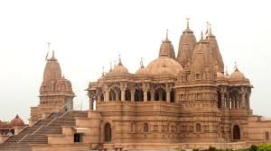

Dwarka
An ancient and prosperous city believed to have been the capital of Lord Krishna's kingdom, Dwarka is an important pilgrimage centre for Hindus from all over the world. It is located on the western coast of Gujarat, on the banks of River Gomti.
Things To See & Do
Most Loved Places
Resorts & Stays
Whats around
Religious
Dwarkadhish Temple Near Dwarka
Popularly known as Jagat Mandir
Dedicated to Lord Krishna, this temple is originally believed to have been built by his grandson, Vajranabha over his residence, Harigriha in ancient Dwarka. It is one of the famous Char Dhams in Hindu mythology and is built on the banks of River Gomti.
1-2 hours
suggested Time
EXPLORE >
ISKCON Dwarka
Temple Loved by Global Devotees of Krishna
An important centre of raising Krishna awareness and spreading the divine knowledge of Bhagawad Gita, the ISKCON temple at Dwarka is just 15 minutes from the railway station. It is also known as Sri Rukminidevi Dwarkadhish Dham.
30 minutes - 1 h...
suggested Time
EXPLORE >
